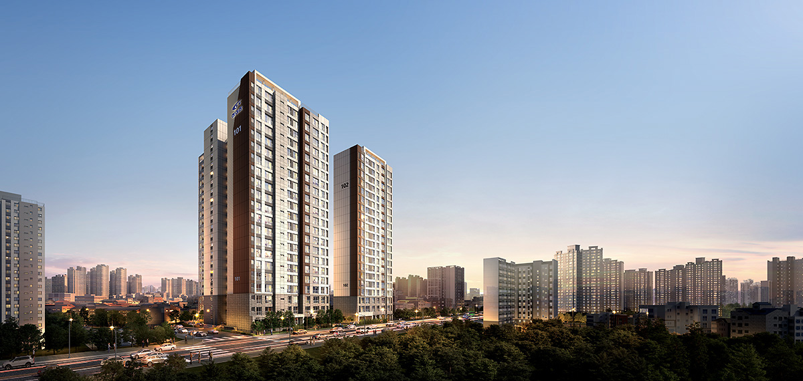

[만안역 중앙하이츠 포레 보도자료]
경기 안양시 만안구 일대에 들어서는 '만안역 중앙하이츠 포레'가 수요자들의 뜨거운 관심을 받고 있다. 뛰어난 입지와 미래 가치를 모두 갖춘 이 단지는 KTX광명역세권 생활권을 공유하며, 월판선 만안역(예정) 개통 시 더블 역세권 프리미엄을 누릴 수 있을 것으로 기대된다.
분양 관계자는 "안양 만안구는 비규제지역의 풍선효과와 대규모 개발 호재가 맞물려 실수요자는 물론 투자자들의 문의가 이어지고 있다"며, "특히 합리적인 분양가와 혁신적인 평면 설계가 호평을 받고 있어 조기 완판이 예상된다"고 전했다.
만안역 중앙하이츠 포레는 지하 3층~지상 21층 규모로 조성되며, 전용면적 59㎡~75㎡ 중소형 평형 위주로 구성된다. 입주는 2026년 예정이다.
※ 본 기사는 예시 데이터입니다. 실제 보도된 내용과는 차이가 있을 수 있습니다.